出發前在 Google Maps 存了 33 個節點。回來一年後，用相簿裡 748 張定位照片對答案：去了 18 個，還多出 33 個當初不在清單上的停點。原來記憶靠不住的部分，座標都還記得。
Suðurnesjabær
IMG_6023.JPG · IMG_6024.JPG
Reykjavík 中央區的現代飯店，走路到 Laugavegur 主街很近。
IMG_6025.JPG · IMG_6026.JPG · IMG_6027.JPG
Veghúsarstígur 9 的酒吧，2016 開幕。100+ 款酒 + 冰島起司拼盤，安靜舒服。週二–日 16:00–23:00，週一休。
IMG_6031.JPG · IMG_6032.JPG · IMG_6033.JPG
Laugavegur 6 的「甜屋」，1871 年的二老建築。冰島第一家賣 rolled ice cream，也有 bubble waffle 跟辣巧克力。8:00–22:00。
IMG_6035.JPG
Reykjavík 中央的有名魚料理餐廳，招牌是熱鐵盤魚（fish pan）。多家分店，份量好。
IMG_6036.JPG · IMG_6037.JPG · IMG_6039.MOV
Reykjavík 中央區的現代飯店，走路到 Laugavegur 主街很近。
IMG_6042.JPG · IMG_6043.MOV · IMG_6044.JPG
冰島經典手工藝品店，自 1940 年。lopapeysa + 設計小物。中央區好幾家。
IMG_6046.JPG · IMG_6635.HEIC · IMG_6636.HEIC
Reykjavík 地標教堂，靈感來自冰島玄武岩柱地形。74 米高，可以搭電梯上去俯瞰全市。
IMG_6047.JPG · IMG_6048.JPG · IMG_6049.JPG
Skólavörðustígur 的織者協會店，買得到真正的 lopapeysa（冰島羊毛毛衣，有手工認證）。
IMG_6055.JPG · IMG_6056.JPG · IMG_6057.JPG
Laugavegur 6 的「甜屋」，1871 年的二老建築。冰島第一家賣 rolled ice cream，也有 bubble waffle 跟辣巧克力。8:00–22:00。
IMG_6061.JPG · IMG_6062.JPG · IMG_6647.HEIC
Reykjavík 中央的有名魚料理餐廳，招牌是熱鐵盤魚（fish pan）。多家分店，份量好。
IMG_6065.JPG · IMG_6067.JPG · IMG_6069.JPG
Laugavegur 23（總店，1916 年的維京壁畫老屋），冰島本地設計的羊毛產品 + cafe。三家分店都在 Reykjavík。質感比觀光店高一級。
IMG_6073.JPG
IMG_6074.JPG · IMG_6075.JPG · IMG_6076.JPG
IMG_6083.JPG · IMG_6084.JPG · IMG_6085.JPG
Norðurljósavegur, Grindavík
IMG_6092.MOV · IMG_6093.MOV · IMG_6094.JPG
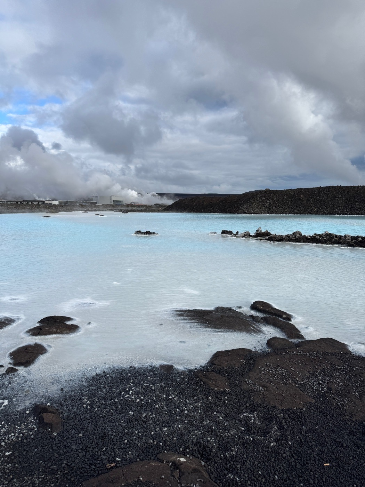
海岸線上的露營區，旁邊就是著名的 Strandakirkja 教堂。
IMG_6106.JPG · IMG_6107.JPG · IMG_6108.MOV
海岸線上的露營區，旁邊就是著名的 Strandakirkja 教堂。
IMG_6110.JPG · IMG_6111.MOV · IMG_6113.MOV
IMG_6118.JPG · IMG_6119.JPG · IMG_6120.MOV
火山口湖，紅色火山岩 + 寶藍湖水的對比超鮮明。比其他景點冷門但很值得。
IMG_6122.JPG · IMG_6123.MOV · IMG_6124.JPG
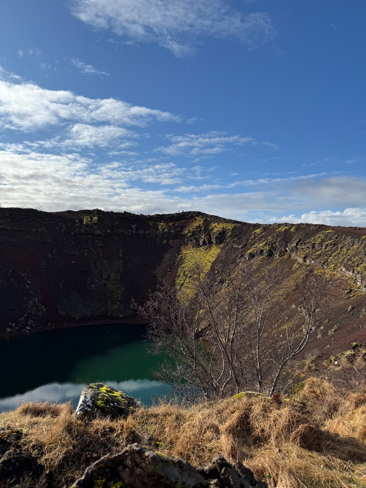
雙層瀑布，冰島最有名的之一。看點：彩虹常駐 + 冰川融水的氣勢。Golden Circle 收尾。
IMG_6132.JPG · IMG_6133.JPG · IMG_6134.MOV
「geyser」這個字的起源地。原始 Geysir 已沒在噴，但隔壁 Strokkur 每 5–10 分鐘噴一次，高度約 20 米。
IMG_6147.JPG · IMG_6148.MOV · IMG_6150.MOV
Golden Circle 路線上的番茄溫室餐廳。番茄湯 + 麵包吃到飽是招牌，氛圍超特別（在玻璃溫室裡用餐）。必訂位。
IMG_6160.JPG · IMG_6161.JPG · IMG_6162.JPG
Selfoss 附近的羊毛店，當地農場羊毛 + 植物染。Golden Circle 路線順路。週一–六 10:00–17:00。
IMG_6172.JPG · IMG_6173.JPG · IMG_6174.JPG
Selfoss 鎮上的露營區，是進入南海岸 / Golden Circle 的好基地。
IMG_6180.JPG · IMG_6181.JPG · IMG_6182.JPG
Selfoss 鎮上的露營區，是進入南海岸 / Golden Circle 的好基地。
IMG_6187.JPG
水量極大的寬瀑布，車就停在旁邊，1 號公路順路。
IMG_6188.JPG · IMG_6189.JPG · IMG_6190.JPG
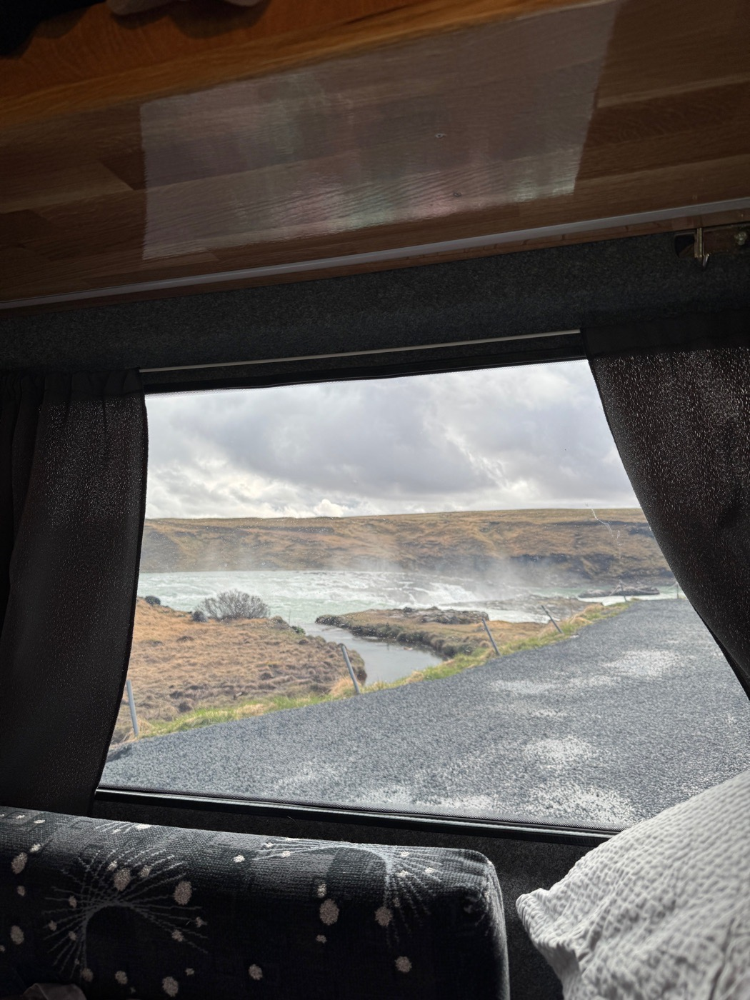
農場上的小型紡線廠 + 毛線店，可以看羊毛加工流程。Niche 但值得。
IMG_6200.JPG · IMG_6201.JPG · IMG_6202.JPG
可以走到瀑布後面的那個
IMG_6214.MOV · IMG_6217.MOV · IMG_6215.JPG
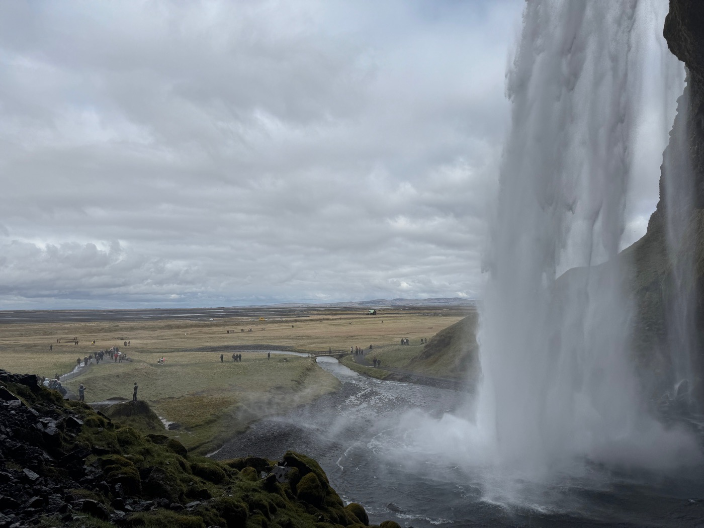
IMG_6249.JPG · IMG_6250.JPG · IMG_6251.JPG
IMG_6256.MOV · IMG_6258.JPG · IMG_6259.JPG
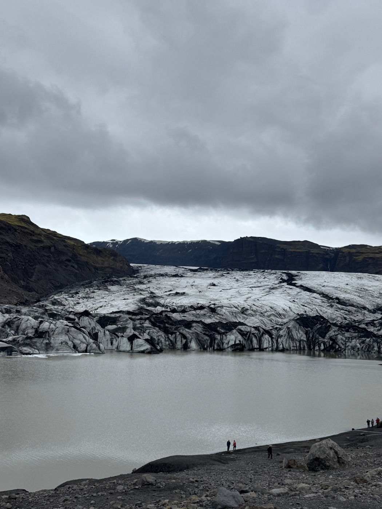
Garðar, Vík
IMG_6266.MOV · IMG_6267.MOV · IMG_6268.JPG
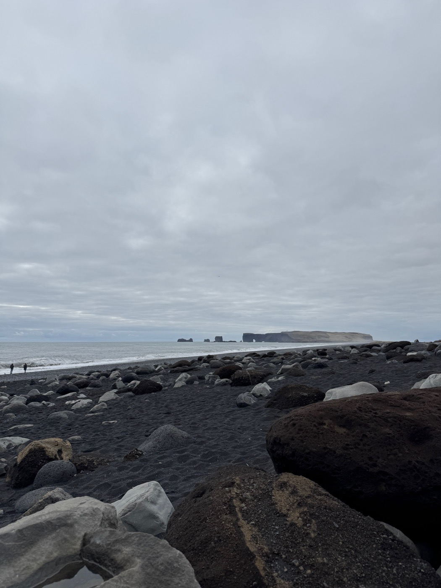
IMG_6272.JPG · IMG_6273.MOV · IMG_6274.JPG
IMG_6275.JPG · IMG_6276.MOV · IMG_6810.HEIC
IMG_6280.MOV · IMG_6281.MOV · IMG_6282.MOV
IMG_6289.JPG · IMG_6290.JPG · IMG_6291.JPG
IMG_6292.JPG · IMG_6293.JPG · IMG_6294.JPG
俯瞰 Skaftafellsjökull 冰川的步道觀景點
IMG_6307.JPG · IMG_6308.JPG · IMG_6310.JPG
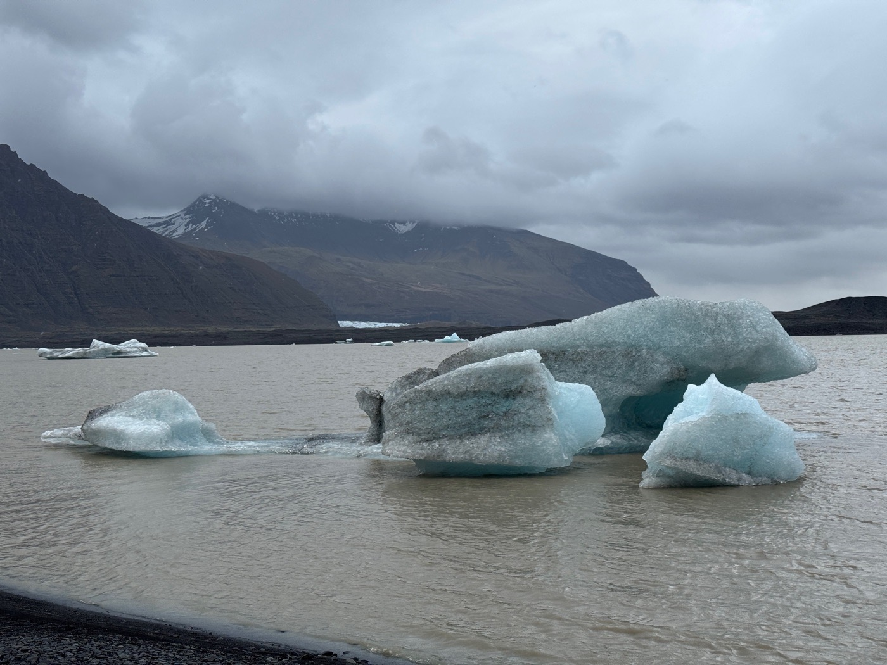
Jökulsárlón 隔壁比較安靜的冰湖
IMG_6354.JPG · IMG_6355.JPG · IMG_6356.JPG
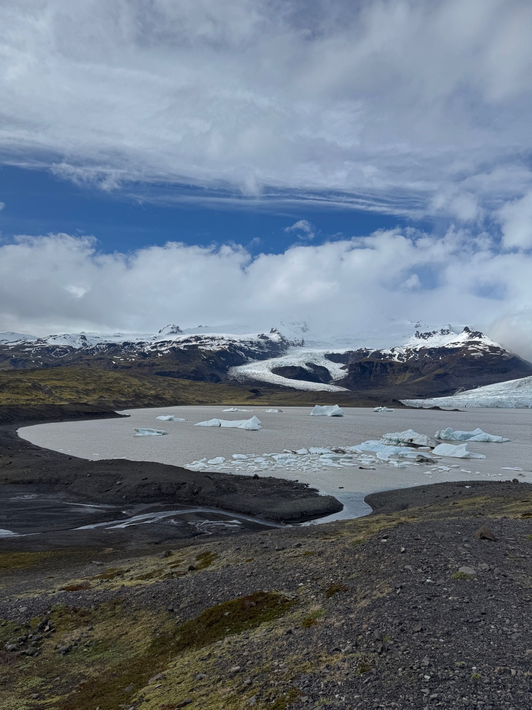
冰河湖與鑽石沙灘
IMG_6390.MOV · IMG_6391.JPG · IMG_6392.MOV
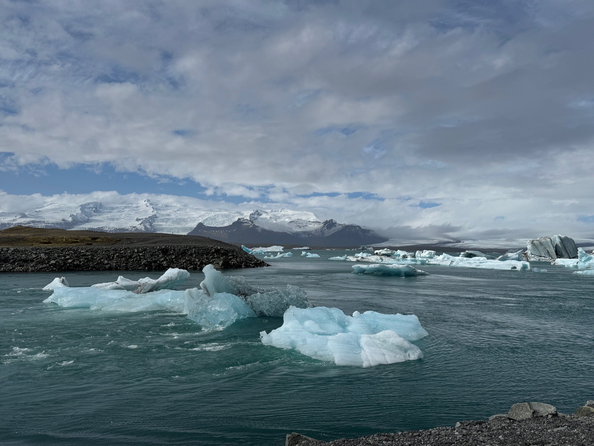
IMG_6420.JPG · IMG_6421.JPG · IMG_6422.JPG
IMG_6428.JPG · IMG_6429.JPG · IMG_6430.MOV
IMG_6435.MOV · IMG_6436.JPG · IMG_6437.JPG
Djúpivogur ↔ Egilsstaðir 的捷徑山路
IMG_6452.MOV · IMG_6453.JPG · IMG_6455.MOV
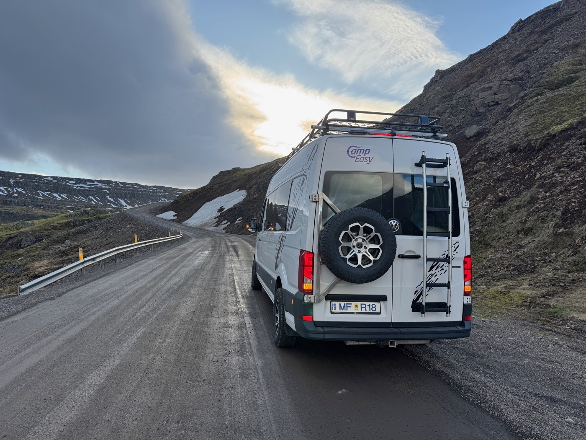
IMG_6462.JPG · IMG_6463.JPG · IMG_6464.JPG
IMG_6468.JPG · IMG_6469.JPG
Borgarfjörður eystri
IMG_6473.JPG · IMG_6475.JPG · IMG_6474.MOV
Borgarfjörður eystri 的 puffin 觀察棧道
IMG_6476.JPG · IMG_6477.JPG · IMG_6478.JPG
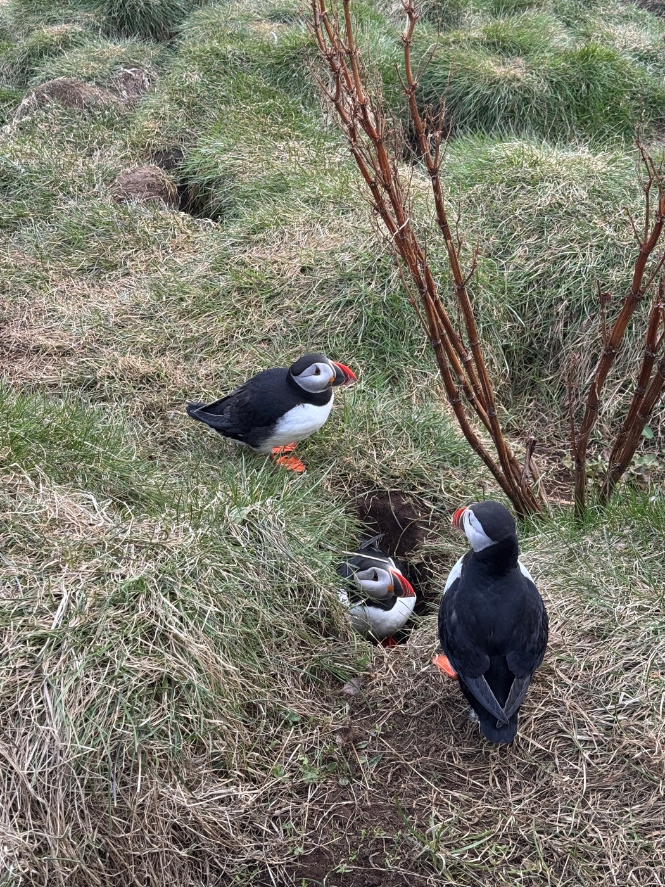
IMG_6899.MOV · IMG_6523.MOV
IMG_6471.MOV · IMG_6472.MOV · IMG_6521.MOV
北部版藍湖。照片證實：門口招牌 JARÐBÖÐIN
IMG_6524.JPG · IMG_6525.JPG · IMG_6526.JPG
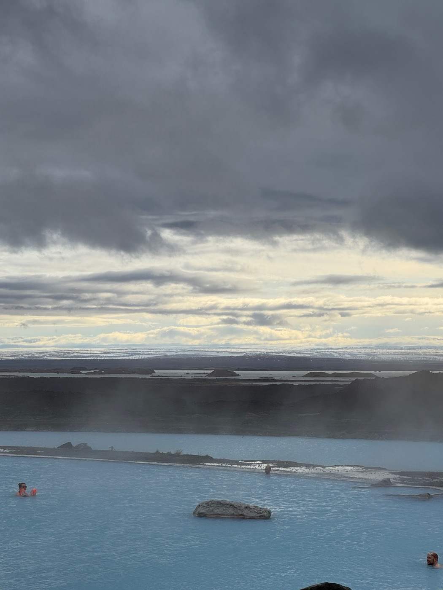
米湖主聚落
IMG_6538.JPG · IMG_6539.JPG · IMG_6540.JPG
米湖主聚落
IMG_6549.JPG · IMG_6550.JPG · IMG_6551.JPG
IMG_6554.MOV · IMG_6555.MOV · IMG_6556.MOV
IMG_6560.MOV · IMG_6561.MOV · IMG_6562.JPG
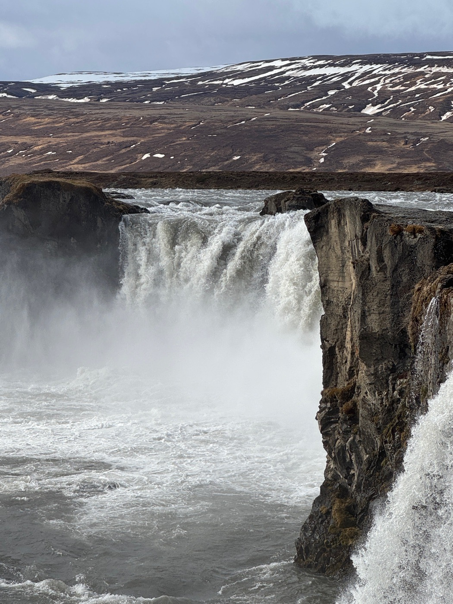
IMG_6580.JPG · IMG_6581.JPG · IMG_6582.MOV
IMG_6586.JPG · IMG_6587.JPG · IMG_6588.JPG
IMG_6596.JPG · IMG_6597.JPG · IMG_6598.JPG
IMG_6605.JPG · IMG_6606.JPG · IMG_6607.MOV
IMG_6608.JPG · IMG_6609.JPG
IMG_6610.MOV · IMG_6611.JPG
IMG_6613.MOV · IMG_6614.MOV · IMG_6617.mov
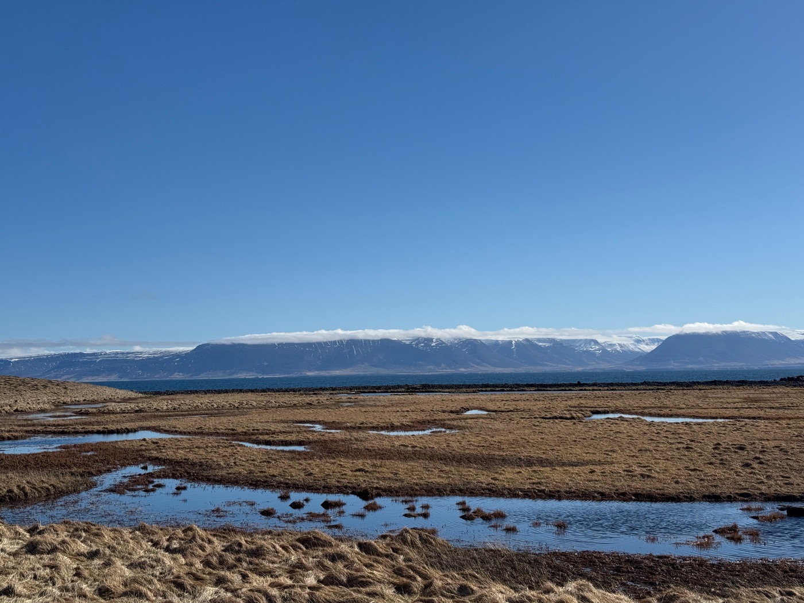
Skagafjörður 北岸 Reykjaströnd，Grettir 傳說的石砌溫泉池
IMG_6622.JPG · IMG_6623.JPG · IMG_6624.JPG
Skagafjörður 北岸 Reykjaströnd，Grettir 傳說的石砌溫泉池
IMG_6670.JPG · IMG_6671.JPG · IMG_6673.JPG
IMG_6694.MOV · IMG_6695.MOV · IMG_6696.JPG
IMG_6697.MOV · IMG_6698.JPG · IMG_6699.JPG
IMG_6702.JPG · IMG_6703.JPG
IMG_6705.JPG · IMG_6706.JPG · IMG_6707.JPG
Reykjavík 近郊的鄉間露營區。
IMG_6709.JPG · IMG_6710.JPG · IMG_6711.JPG
Þingvellir ↔ Laugarvatn 之間
IMG_6726.JPG · IMG_7029.HEIC · IMG_7031.HEIC
IMG_6738.JPG
Suðurnesjabær
IMG_6740.JPG · IMG_6741.JPG · IMG_6742.JPG
口袋清單 33 個節點裡，照片證實去了 18 個。這 15 個這趟沒拍到照片，留給下一次：
照片定位 × 節點座標最近距離比對；未命中的照片先叢集、再以 OpenStreetMap 反查地名。時間為冰島時間（UTC+0）。